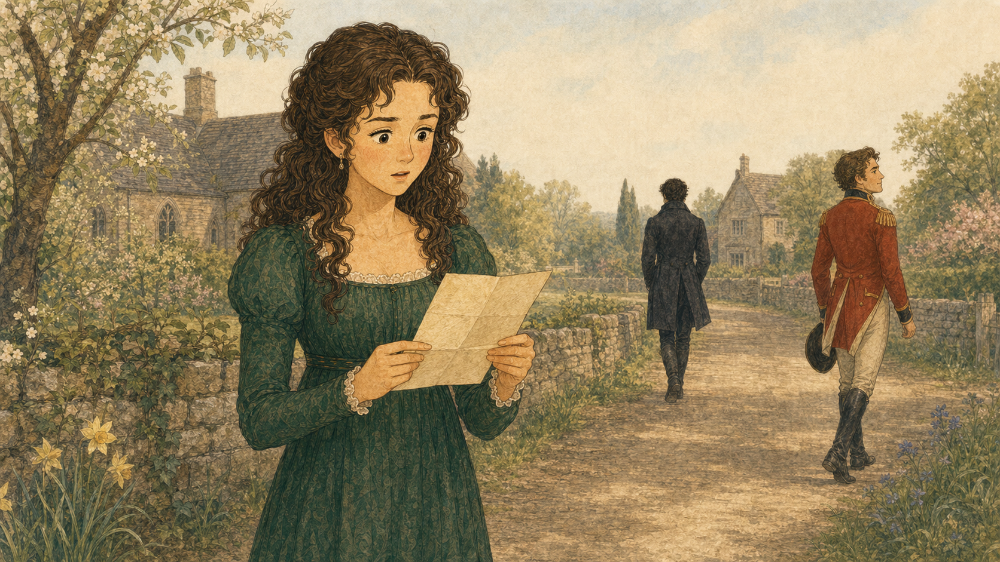
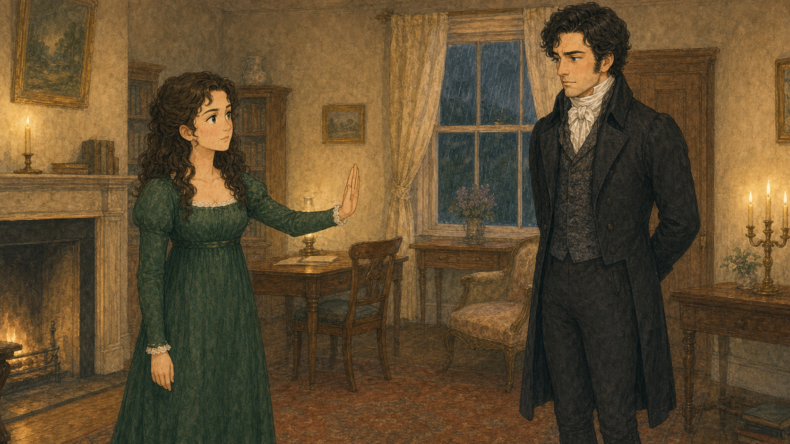
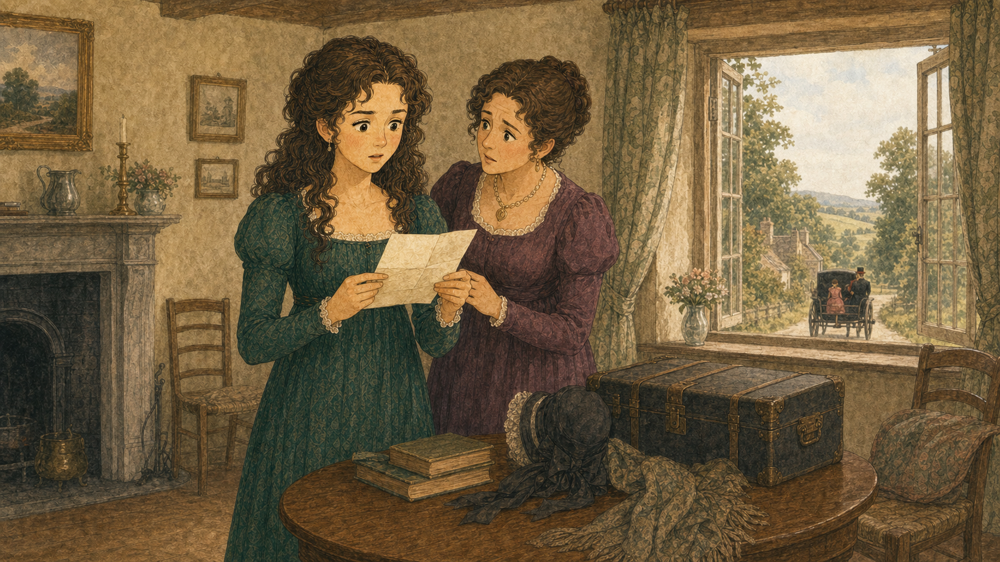

LESSON 2 · CHAPTER 5–7
첫인상 너머의
진실을 찾아라!
오만하게 들린 청혼, 한 통의 긴 편지, 갑작스러운 실종 소식. 인물의 말과 사건의 증거를 비교하며 판단이 바뀌는 순간을 추적합니다.
말과 태도주장과 증거원인과 결과
지난 사건 복습 · 1~4장
네 장면의 기억을 깨워요
카드를 눌러 1회차의 핵심 사건을 확인하세요. 네 장을 모두 열면 복습 완료!
강사 포인트 · 인물 이름을 외우는 것보다 각 사건 뒤에 어떤 첫인상이 생겼는지 말하게 합니다.
오늘의 탐정 도구
5~7장을 읽는 세 가지 렌즈
무엇을 찾아야 하는지 먼저 확인하면 긴 이야기도 선명해집니다.
말
표현 렌즈
진심을 말하더라도 상대를 낮추는 표현이 섞이면 어떻게 들리는지 살펴봅니다.
증거
검증 렌즈
편지 속 주장과 이미 알고 있던 사실을 비교하여 믿을 만한 근거를 찾습니다.
결과
파장 렌즈
한 사람의 선택이 가족과 다른 인물의 미래에 어떤 영향을 주는지 연결합니다.
핵심 질문
새로운 사실을 알게 되었을 때, 처음 내린 판단을 바꾸는 것은 약한 태도일까요, 용기 있는 태도일까요?
수업 목표 · 인물의 표현과 의도를 구별하고, 주장과 증거를 비교하며, 사건의 원인–결과를 설명합니다.
CHAPTER 5 · 오만한 다아시
사랑을 말했는데 왜 거절당했을까?
청혼에 이르기까지의 사건부터 차례로 열고, 갈등의 원인을 빠짐없이 추리하세요.

몸짓과 두 사람 사이의 거리도 중요한 단서입니다.엘리자베스가 청혼을 거절한 가장 완전한 까닭은?
강사 포인트 · ‘사랑한다’는 의도만으로 말의 상처가 사라지는지 묻고, 의도와 표현을 분리해 봅니다.
CHAPTER 5 · 말의 온도
진심과 오만을 구별해요
각 문장이 보여 주는 핵심을 선택하세요. 네 문장을 모두 맞혀야 단서를 얻습니다.
토론 확장 · 한 문장 안에 진심과 무례함이 함께 있을 수도 있음을 설명하되, 이번 활동은 가장 두드러지는 특징을 고르는 연습입니다.
CHAPTER 5 · 관점 대조
같은 청혼, 서로 다른 해석
두 인물의 마음을 읽고 갈등의 핵심을 한 문장으로 정리해 보세요.
엘리자베스의 관점
“나를 사랑한다면서 우리 집안을 무시했어요. 제인과 빙리를 갈라놓고 위컴도 부당하게 대했다고 믿어요.”
다아시의 관점
“가문과 지위의 차이를 이겨 낼 만큼 사랑한다고 고백했어요. 내가 거절당할 거라고는 생각하지 못했어요.”
갈등의 핵심
아래에서 가장 알맞은 설명을 골라 보세요.
강사 포인트 · 갈등을 ‘누가 옳다’로 끝내지 말고, 정보 부족과 표현 방식이 함께 충돌했음을 찾게 합니다.
CHAPTER 6 · 밝혀진 진실
편지 속 세 가지 해명
거절 다음 날 받은 편지입니다. 사건의 순서를 따라 다아시가 무엇을 설명했는지 확인하세요.
앞 장면과 연결
다아시는 엘리자베스의 비난에 말로 맞서기보다, 다음 날 편지를 건넵니다. 엘리자베스는 처음에는 화가 났지만 같은 부분을 여러 번 읽으며 기억과 편지의 설명을 비교합니다.
엘리자베스는 편지를 여러 번 읽으며 자신의 판단도 검토합니다. 강사 포인트 · 편지는 다아시의 주장이라는 점을 분명히 하고, 이후 행동과 다른 단서가 주장을 뒷받침하는지 따져야 함을 강조합니다.
CHAPTER 6 · 주장 검증
이 문장은 어디에 속할까?
문장이 하나씩 제시됩니다. ‘다아시의 설명 / 엘리자베스의 이전 판단 / 확인된 변화’ 중 하나를 고르세요.
강사 포인트 · 인물의 말은 사실과 같지 않습니다. 누가 말했는지, 무엇으로 확인할 수 있는지를 문장마다 묻게 합니다.
CHAPTER 6 · 판단 수정
편지 뒤, 행동으로 다시 확인한 진실
엘리자베스는 편지만 믿은 것이 아닙니다. 펨벌리에서 만난 사람들의 말과 다아시의 행동도 차례로 확인합니다.
편지 이후 이어진 네 장면
1엘리자베스는 외숙부·외숙모와 여행하다 다아시가 없는 줄 알고 펨벌리를 방문합니다.
2저택 관리인은 다아시가 가족과 하인에게 다정하고 책임감 있는 주인이라고 말합니다.
3예정보다 일찍 돌아온 다아시는 엘리자베스의 친척들을 무시하지 않고 정중하게 대합니다.
4다아시는 여동생 조지아나를 소개합니다. 엘리자베스는 편지의 설명과 실제 행동이 이어지는지 살핍니다.
예시 범위 · 위컴 신뢰 0~35, 다아시의 새로운 면 65~100, 첫인상 수정 가능성 70~100이면 이야기의 변화와 잘 맞습니다.
CHAPTER 7 · 사라진 장밋빛 꿈
희망이 생기던 여행을 멈춘 편지
리디아가 브라이턴으로 떠난 일부터 가족의 수색까지, 빠진 사건 없이 파장을 추적하세요.

창밖 멀어지는 마차는 이미 시작된 사건을 암시합니다.‘장밋빛 꿈’이 사라졌다고 느낀 까닭은?
강사 포인트 · 당시 사회에서 혼인하지 않은 채 달아나는 일이 개인뿐 아니라 가족 전체의 평판과 결혼 가능성에 영향을 주었음을 배경지식으로 보충합니다.
CHAPTER 7 · 사건 복원
엘리자베스에게 무슨 일이 이어졌을까?
엘리자베스가 겪은 다섯 장면만 골라 시간순으로 놓으세요.
주인공 중심 사건 기록
엘리자베스는 가디너 외숙부·외숙모와 여행하다 램턴의 여관에 머뭅니다. 그곳에서 제인의 편지로 리디아의 소식을 알고, 자신을 찾아온 다아시에게 사건을 말합니다. 두 사람은 함께 여행한 것이 아닙니다.
아직 놓인 사건이 없습니다.
강사 포인트 · 앞의 네 카드는 엘리자베스가 겪은 실제 사건, 마지막 카드는 그 사건 뒤에 느낀 마음입니다.
5~7장 · 변화 곡선
엘리자베스의 마음은 어떻게 움직였을까?
각 사건에서 가장 가까운 마음을 선택해 변화의 흐름을 완성하세요.
CHAPTER 8두 자매의 결혼위기에 빠진 가족에게 뜻밖의 도움이 나타납니다.
CHAPTER 9캐서린 부인과의 대결엘리자베스는 자신의 선택을 스스로 지켜 냅니다.
CHAPTER 10세상에서 가장 행복한 사람바뀐 판단과 행동이 어떤 결말을 만드는지 확인합니다.
마무리 질문 · 엘리자베스가 다아시를 다시 보게 된 결정적 계기는 편지 자체인지, 편지를 검토한 태도인지 토론합니다.
5~7장 · 인물 관계 마인드맵
믿음과 선택이 만든 관계를 연결해요
인물 얼굴을 캔버스에 놓고 움직이세요. 두 항목을 선택해 선을 잇고, 관계와 사건을 메모로 추가할 수 있습니다.
강사 포인트 · 엘리자베스–다아시–위컴의 믿음 변화와 리디아–위컴 사건의 파장을 각각 한 선 이상으로 표현하게 합니다. 연결한 이유를 반드시 말로 설명하게 합니다.
출구 미션 · 탐정 보고서
판단이 바뀐 순간을 기록해요
정답 하나보다, 어떤 증거로 생각을 바꾸었는지가 중요합니다.
판단과 진실 탐정단 2회차 완료 · 5~7장 사건 파일을 해결했습니다.
평가 관찰 · ① 표현과 의도의 구분 ② 주장과 증거의 구분 ③ 리디아 사건의 원인–결과 설명이 나타나는지 확인합니다.
© 2026 Oncuvate · 오만과 편견 판단과 진실 탐정단 · 2회차